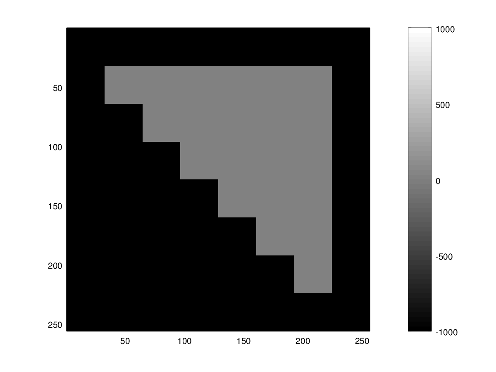
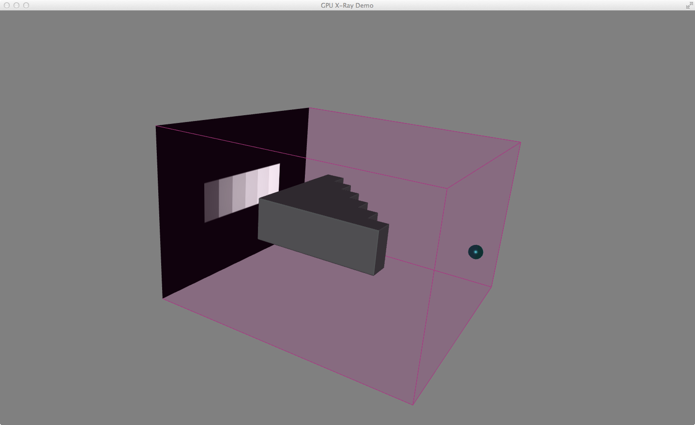
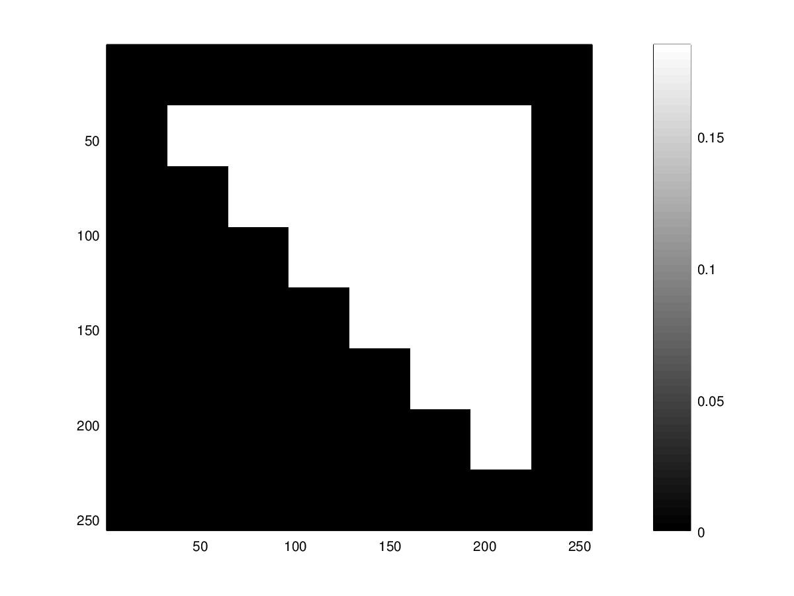
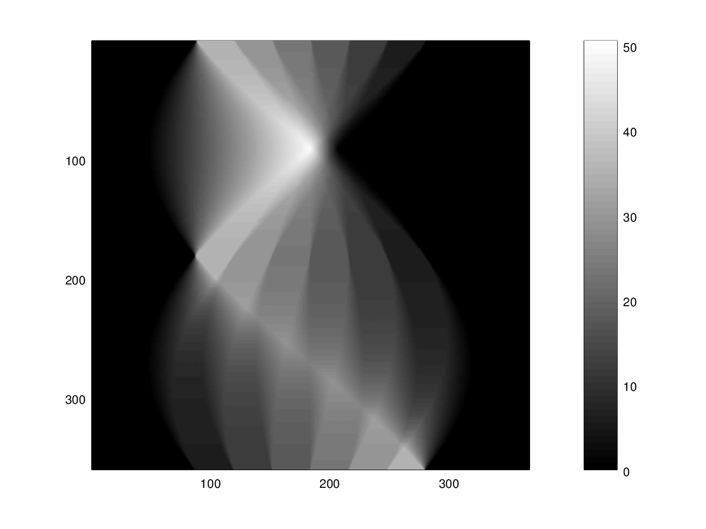
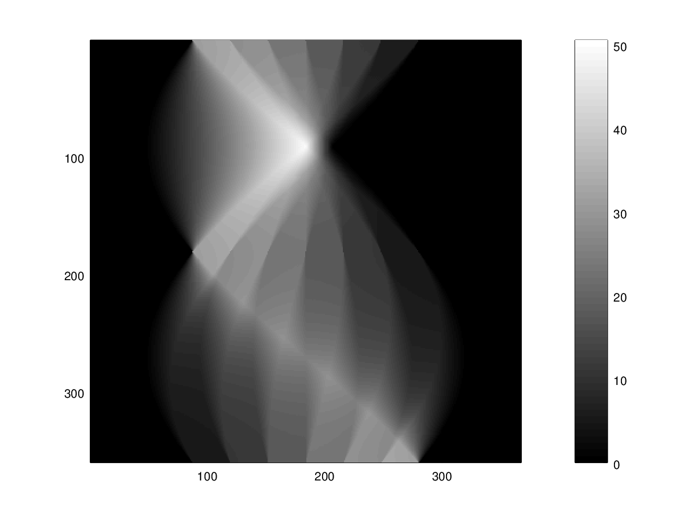
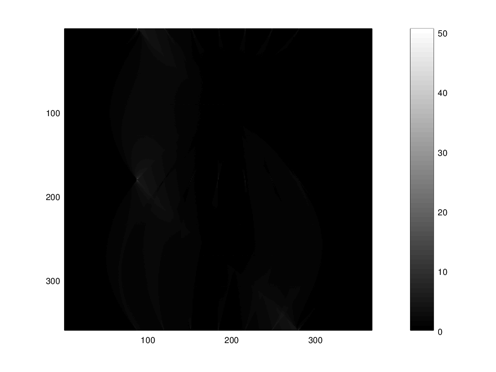

The results presented here have been generated using validation_08.cxx. In this test, we will simulate the geometry as follows:
We generate the CT volume of a step wedge. It is made of water (HU = 0). It is created using ITK. Voxel data are generated first then an isosurface is extracted to generate a polygon mesh.


We convert it in linear attenuation coefficient (in cm-1).

We perform a Radon transform.

We segment the CT volume to extract a polygon mesh of the step wedge.
We simulate a sinogram acquisition.

The error map.
